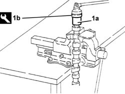
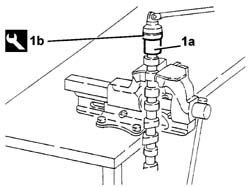

1036C40 VARIABLE VALVE TIMING on inlet camshaft in cylinder head - R&R with shaft removed
- Path
- Procedures > 10 ENGINE > 1036 TIMING SYSTEM > 1036C CAMSHAFTS (2) IN CYLINDER HEAD (1) > 1036C40 VARIABLE VALVE TIMING on inlet camshaft in cylinder head - R&R with shaft removed
- Kind
- repair procedure (removal / refitting; the operation number is the code)
- Applies to
- engines: 2.0 TB, 2.4 20V; all production periods
- Interactive page
- https://sloeber94.github.io/elrnDB-lThss/en/#/91869
Applies to: engines: 2.4 20V; all production periods
 Removing
Removing
 Refitting
Refitting- Position the inlet side camshaft in a vice fitted with protective jaws.
1. Remove the phase transformer (1a) from the inlet side camshaft using the tool (1b).
 | Description | Code | Function |
|---|---|---|---|
1b | Spanner | 1.852.161.000 | Removing phase transformer from inlet side camshaft |

Applies to: engines: 2.4 20V; all production periods
Refitting
Removing- Apply Loctite 270 to the 3rd thread of the phase transformer taking care not to block the oil ducts.
- Fit the phase transformer on the inlet side camshaft and tighten it to the recommended torque using the tool.
| Description | Code | Function |
|---|---|---|---|
. | Spanner | 1.852.161.000 | Removing phase transformer from inlet side camshaft |
 | Value - daNm | Fastening | Component | Ø |
|---|---|---|---|---|
. | 2,4 - 3,1 | Bolt | TIMING VARIATOR | - |
- Remove the inlet side camshaft from the vice.
Applies to: engines: 2.0 TB; all production periods
Removing
Refitting- Position the inlet side camshaft in a vice fitted with protective jaws.
1. Remove the phase transformer (1a) from the inlet side camshaft using the tool (1b).
| Description | Code | Function |
|---|---|---|---|
1b | Spanner | 1.852.161.000 | Removing phase transformer from inlet side camshaft |
Applies to: engines: 2.0 TB; all production periods
Refitting
Removing- Position the inlet side camshaft in a vice with protective jaws.
- Apply adhesive to the 3rd thread.
 | Description | Qty. | Component | Type | Classification |
|---|---|---|---|---|---|
. | Loctite 270 | 1 g | TIMING VARIATOR | Adhesive | - |
- Using the special tool and a torque wrench, tighten the phase transformer to the recommended torque on the camshaft.
| Description | Code | Function |
|---|---|---|---|
. | Spanner | 1.852.161.000 | Removing phase transformer from inlet side camshaft |
| Value - daNm | Fastening | Component | Ø |
|---|---|---|---|---|
. | 2,4 - 3,1 | Bolt | TIMING VARIATOR | - |
- Wait for about 2 hours before fitting the shaft on the head.
- Check that on hardening the adhesive has not obstructed the oil duct for activating the phase transformer.
- This check should be carried out by directing an air jet, at a pressure of more than 4 bar, into the port in the camshaft, whilst simultaneously blocking the opening at the opposite end.
- Visually check that the phase transformer rotates.
- If the phase transformer does not rotate, clean the obstructed ducts.
Applies to: engines: 2.0 TB, 2.4 20V; all production periods
Removing
Refitting- Position the inlet side camshaft in a vice with jaw covers.
1. Remove the phase transformer (1a) from the inlet side camshaft using the tool (1b).
| Description | Code | Function |
|---|---|---|---|
1b | Spanner | 1.852.161.000 | Fitting-removing phase transformer on camshaft |

Applies to: engines: 2.0 TB, 2.4 20V; all production periods
Refitting
Removing- Apply adhesive to the thread of the phase transformer taking care not to block the oil ducts.
- Fit the phase transformer on the inlet side camshaft and tighten it using the special tool.
| Description | Code | Function |
|---|---|---|---|
. | Spanner | 1.852.161.000 | Fitting-removing phase transformer on camshaft |
- Remove the inlet side camshaft from the vice.